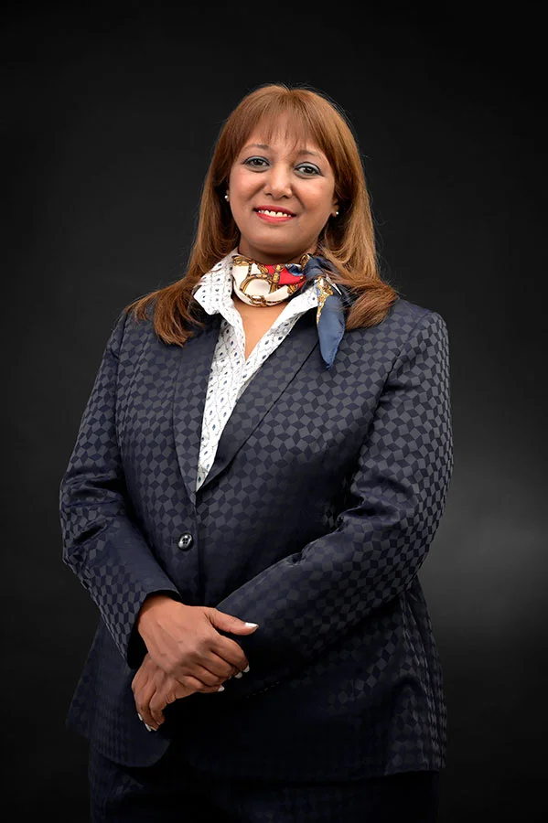

Founder & Chief Executive Officer

As the Founder and Chief Executive Officer of NeuroPi Tech Pvt. Ltd., Dr. Aperna Volluru brings more than 30 years of international experience spanning Artificial Intelligence, Enterprise Information Systems, Data Science, Neuroscience, Human Intelligence, Digital Transformation, and Technology Innovation. Throughout her career, she has consistently combined scientific research with practical engineering to develop intelligent technology platforms capable of solving complex real-world problems through explainable, data-driven decision-making.
Her professional journey began in advanced software engineering and enterprise information systems before progressing into large-scale research, Artificial Intelligence, cognitive science, and intelligent decision-support systems. While serving at the Joint Research Centre (JRC), European Commission, she contributed to technology programmes supporting international scientific collaboration, large-scale information management, research infrastructure, and digital innovation. This experience provided deep exposure to enterprise-scale computing, data governance, systems integration, and mission-critical technology environments.
As Founder of NeuroPi, Dr. Volluru has established the vision for the NeuroPi Industrial Intelligence Platform (NIIP)—an integrated engineering intelligence platform that combines Artificial Intelligence, Engineering Context, Reality Intelligence™, Digital Twins, Knowledge Graphs, Explainable AI, Computer Vision, and Human-in-the-Loop decision support. Under her leadership, NeuroPi has evolved into a deep-technology company focused on delivering enterprise-scale AI solutions for engineering, manufacturing, education, healthcare, workforce development, and defence.
Dr. Volluru has led the conceptualization and development of enterprise Artificial Intelligence platforms that integrate machine learning, computer vision, engineering knowledge representation, explainable reasoning, Digital Twins, and knowledge graphs into unified decision-support systems. Her work focuses on transforming complex engineering information into trusted engineering intelligence through transparent, explainable, and continuously learning AI systems.
With more than three decades of experience in enterprise software engineering, Dr. Volluru has extensive expertise in:
These capabilities form the technological foundation of the NeuroPi Industrial Intelligence Platform.
Throughout her career, Dr. Volluru has successfully led multidisciplinary research and technology initiatives combining engineering, Artificial Intelligence, neuroscience, genetics, cognitive science, and data analytics. Her research philosophy emphasizes explainable Artificial Intelligence, evidence-based decision-making, and responsible innovation, ensuring that advanced technologies remain transparent, trustworthy, and aligned with human expertise.
As Chief Executive Officer, Dr. Volluru leads the strategic vision, product architecture, research direction, and technology innovation behind the NeuroPi Industrial Intelligence Platform. Her responsibilities include:
Dr. Volluru has successfully founded and scaled multiple technology-driven enterprises across Artificial Intelligence, enterprise software, education technology, human development, and digital innovation. Her entrepreneurial experience enables NeuroPi to combine scientific excellence with commercially scalable technology platforms capable of addressing complex industrial and defence challenges.
Dr. Volluru's work has been recognized internationally for contributions to technology, innovation, education, entrepreneurship, and social impact, including:
These recognitions reflect her long-standing commitment to combining technology innovation with meaningful societal impact.
As Founder and Chief Executive Officer, Dr. Volluru provides overall strategic leadership for the AI-Powered Digital Twin Sync System and the NeuroPi Industrial Intelligence Platform. She is responsible for:
Her leadership ensures that the proposed solution integrates advanced Artificial Intelligence with engineering governance, explainability, Digital Twin synchronization, and enterprise-scale deployment while maintaining alignment with the operational requirements of defence and strategic industries.
The AI-Powered Digital Twin Sync System represents far more than an Artificial Intelligence application—it is an enterprise Industrial Intelligence platform that integrates engineering knowledge, Digital Twins, explainable AI, enterprise data integration, and secure decision support within mission-critical engineering environments.
Dr. Aperna Volluru's unique combination of international research experience, enterprise technology leadership, Artificial Intelligence innovation, multidisciplinary systems thinking, and successful technology entrepreneurship provides the strategic vision required to lead the development of this next-generation engineering intelligence platform. Under her leadership, NeuroPi has established a comprehensive Industrial Intelligence framework that combines Reality Intelligence, Engineering Context, Explainable AI, Knowledge Graphs, Computer Vision, and Living Digital Twins to enable secure, transparent, and evidence-based engineering decision-making.
Her vision aligns closely with the objectives of Mazagon Dock Shipbuilders Limited and the iDEX DRISHTI Challenge–72, supporting India's drive toward Atmanirbhar Bharat, indigenous defence capability development, and the digital transformation of naval shipbuilding through advanced Artificial Intelligence and Industrial Intelligence technologies.